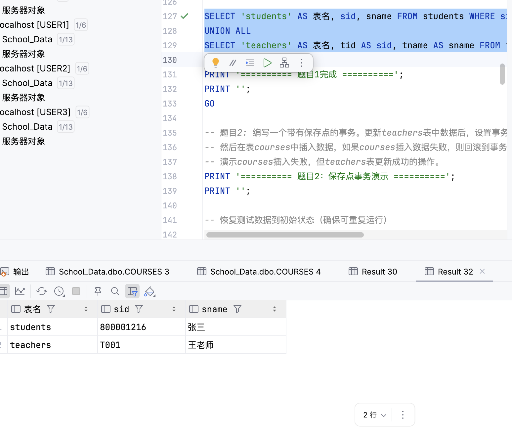
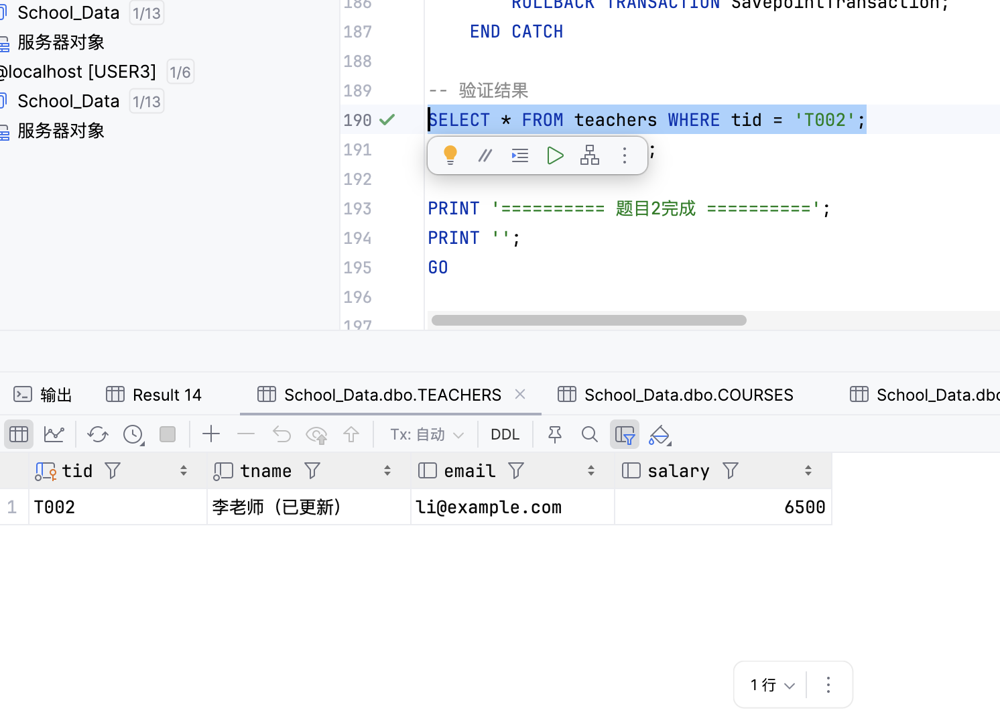
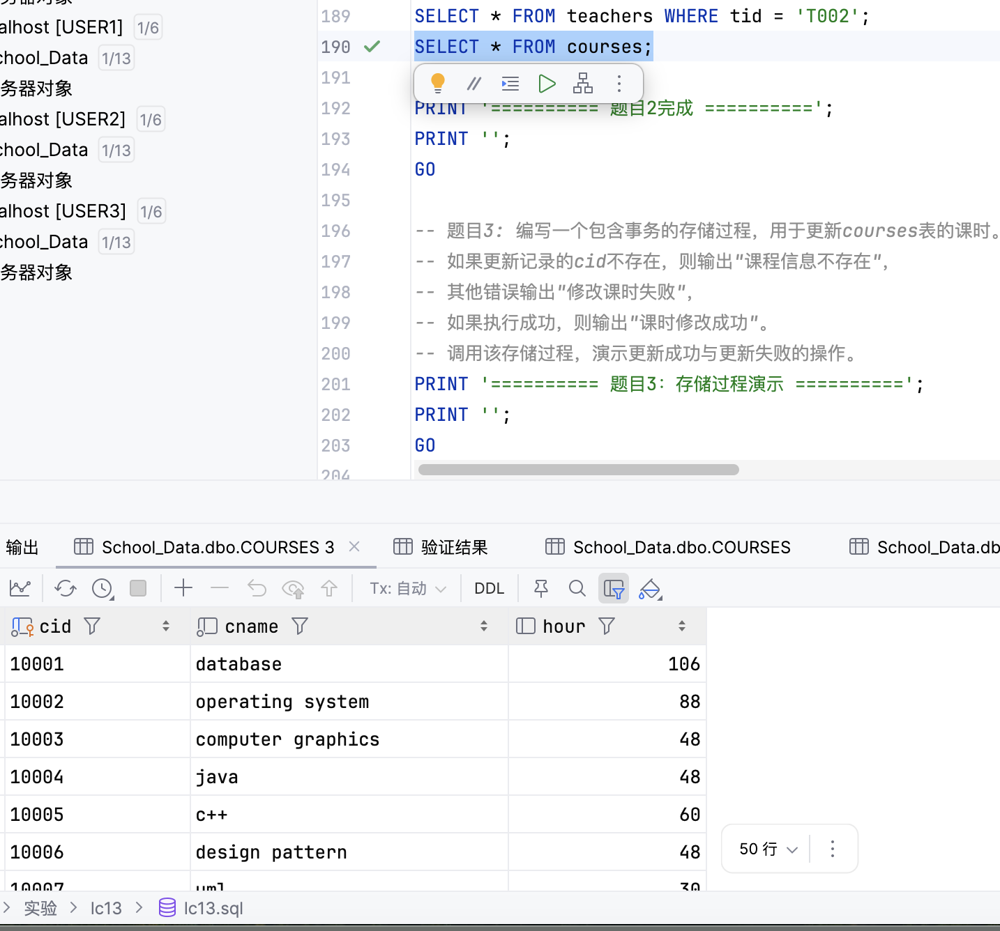
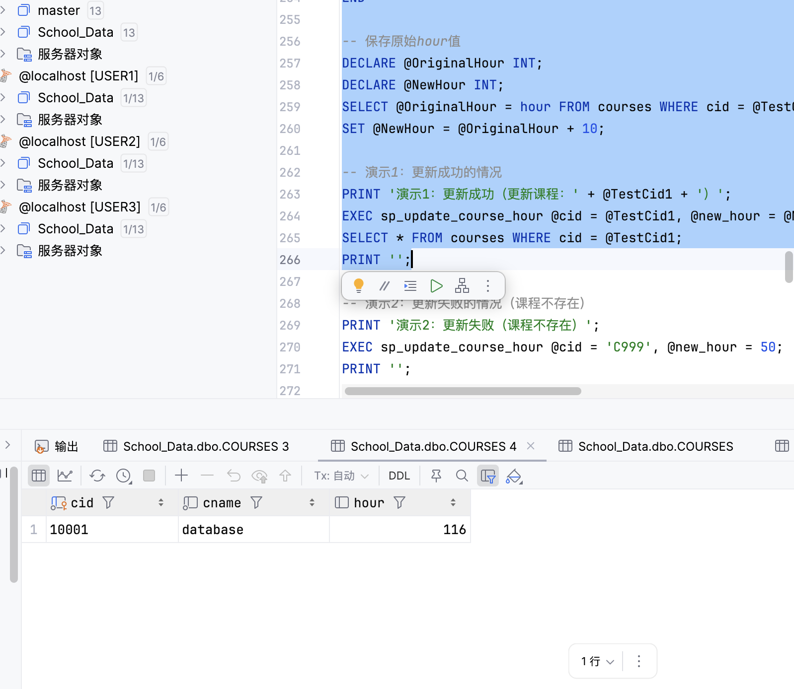
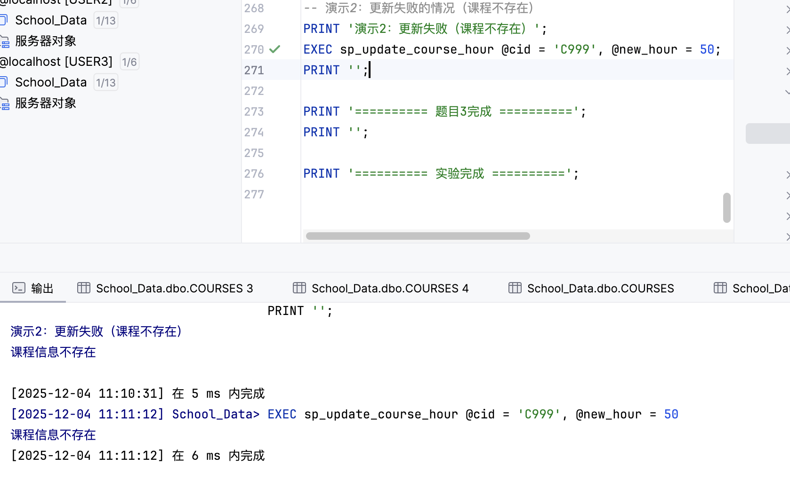

实验信息
- 实验名称: 事务和存储过程实验
- 实验日期: 2025-12-04
- 数据库: School_Data
- 实验目的: 学习使用事务（Transaction）和存储过程（Stored Procedure）来保证数据一致性和实现复杂的业务逻辑，理解嵌套事务、保存点事务和存储过程中的事务处理
实验内容概述
本次实验主要包含以下内容：
- 编写一个嵌套事务，演示内层事务失败后，外层事务的回滚
- 编写一个带有保存点的事务，演示部分回滚的功能
- 编写一个包含事务的存储过程，用于更新课程课时，并演示成功与失败的情况
环境准备
测试数据准备
实验脚本在环境准备阶段会自动插入以下测试数据：
- students表: sid='800001216'（张三）、sid='800005753'（李四）
- teachers表: tid='T001'（王老师）、tid='T002'（李老师）
- courses表: 使用数据库中已有的课程数据（如果courses表为空，题目2会自动创建测试课程）
说明: 这些测试数据是实验脚本在环境准备阶段自动插入的，用于演示事务和存储过程的功能。脚本使用IF NOT EXISTS检查，如果数据已存在则恢复初始值，确保实验可以重复运行。courses表使用数据库中已有的真实数据，不插入硬编码的课程数据。
题目1：嵌套事务演示
实验目的
编写一个嵌套事务，外层修改students表某记录，内层在teachers表插入一条记录。演示内层插入操作失败后，外层修改操作回滚。
实验步骤
1创建嵌套事务
BEGIN TRANSACTION OuterTransaction;
-- 外层事务：修改students表
BEGIN TRY
UPDATE students
SET sname = '张三（已修改）'
WHERE sid = '800001216';
-- 内层事务：插入teachers表（使用已存在的tid，会违反主键约束）
BEGIN TRANSACTION InnerTransaction;
BEGIN TRY
INSERT INTO teachers (tid, tname, email, salary)
VALUES ('T001', '新教师', 'newteacher@example.com', 7000);
COMMIT TRANSACTION InnerTransaction;
END TRY
BEGIN CATCH
PRINT '内层事务失败：' + ERROR_MESSAGE();
ROLLBACK TRANSACTION;
THROW;
END CATCH
COMMIT TRANSACTION OuterTransaction;
END TRY
BEGIN CATCH
PRINT '外层事务失败：' + ERROR_MESSAGE();
IF @@TRANCOUNT > 0
ROLLBACK TRANSACTION;
PRINT '事务已由内层回滚';
END CATCH
实验结果
执行结果:
内层事务失败：Violation of PRIMARY KEY constraint 'PK_TEACHERS'. Cannot insert duplicate key in object 'dbo.TEACHERS'. The duplicate key value is (T001 ). 外层事务失败：Violation of PRIMARY KEY constraint 'PK_TEACHERS'. Cannot insert duplicate key in object 'dbo.TEACHERS'. The duplicate key value is (T001 ). 事务已由内层回滚
验证结果:
正确：students表数据已回滚，sname恢复为"张三" 正确：teachers表数据已回滚，T001的tname恢复为"王老师"

结果分析
- 嵌套事务机制：在SQL Server中，嵌套事务通过@@TRANCOUNT计数器管理。BEGIN TRANSACTION增加计数，COMMIT减少计数，只有最外层的COMMIT才会真正提交事务
- ROLLBACK行为：内层事务执行ROLLBACK TRANSACTION（无名称）会回滚所有嵌套事务，将@@TRANCOUNT设为0，整个事务完全结束
- 错误传播：内层事务使用THROW抛出错误，外层CATCH捕获错误。由于内层已经回滚，外层检查@@TRANCOUNT为0，不再执行ROLLBACK
- 数据一致性：验证结果显示，students表和teachers表的数据都正确回滚到原始状态，证明了嵌套事务的回滚机制正常工作
- 事务原子性：整个嵌套事务作为一个原子操作，要么全部成功，要么全部回滚，保证了数据的一致性
题目2：保存点事务演示
实验目的
编写一个带有保存点的事务。更新teachers表中数据后，设置事务保存点，然后在表courses中插入数据。如果courses插入数据失败，则回滚到事务保存点。演示courses插入失败，但teachers表更新成功的操作。
实验步骤
1创建保存点事务
BEGIN TRANSACTION SavepointTransaction;
BEGIN TRY
-- 更新teachers表
UPDATE teachers
SET tname = '李老师（已更新）', salary = 6500
WHERE tid = 'T002';
-- 设置保存点
SAVE TRANSACTION Savepoint1;
-- 尝试插入courses表（使用已存在的cid，会失败）
BEGIN TRY
INSERT INTO courses (cid, cname, hour)
VALUES (@TestCid, '新课程', 32);
COMMIT TRANSACTION SavepointTransaction;
END TRY
BEGIN CATCH
PRINT 'courses表插入失败：' + ERROR_MESSAGE();
ROLLBACK TRANSACTION Savepoint1;
COMMIT TRANSACTION SavepointTransaction;
END CATCH
END TRY
BEGIN CATCH
PRINT '事务失败：' + ERROR_MESSAGE();
ROLLBACK TRANSACTION SavepointTransaction;
END CATCH
实验结果
执行结果:
courses表插入失败：Violation of PRIMARY KEY constraint 'PK_COURSES'. Cannot insert duplicate key in object 'dbo.COURSES'. The duplicate key value is (10001 ).
验证结果:
teachers表T002记录已更新：tname='李老师（已更新）', salary=6500 courses表没有新增记录（插入操作被回滚）


结果分析
- 保存点机制：SAVE TRANSACTION Savepoint1在事务中创建一个保存点，允许后续操作回滚到该点，而不影响保存点之前的操作
- 部分回滚：当courses表插入失败时，执行ROLLBACK TRANSACTION Savepoint1，只回滚保存点之后的操作，保留保存点之前的teachers表更新
- 事务提交：回滚到保存点后，执行COMMIT TRANSACTION提交整个事务，保存点之前的操作（teachers表更新）被永久保存
- 数据验证：验证结果显示，teachers表的更新成功保留，courses表没有新增记录，证明了保存点事务的正确性
- 使用场景：保存点事务适用于需要部分回滚的场景，比如批量操作中，某些操作失败但不影响已成功的操作
题目3：存储过程演示
实验目的
编写一个包含事务的存储过程，用于更新courses表的课时。如果更新记录的cid不存在，则输出"课程信息不存在"，其他错误输出"修改课时失败"，如果执行成功，则输出"课时修改成功"。调用该存储过程，演示更新成功与更新失败的操作。
实验步骤
1创建存储过程
CREATE PROCEDURE sp_update_course_hour
@cid CHAR(10),
@new_hour INT
AS
BEGIN
SET NOCOUNT ON;
BEGIN TRANSACTION;
BEGIN TRY
-- 检查课程是否存在
IF NOT EXISTS (SELECT 1 FROM courses WHERE cid = @cid)
BEGIN
ROLLBACK TRANSACTION;
PRINT '课程信息不存在';
RETURN;
END
-- 更新课时
UPDATE courses
SET hour = @new_hour
WHERE cid = @cid;
-- 检查是否真的更新了
IF @@ROWCOUNT = 0
BEGIN
ROLLBACK TRANSACTION;
PRINT '课程信息不存在';
RETURN;
END
COMMIT TRANSACTION;
PRINT '课时修改成功';
END TRY
BEGIN CATCH
ROLLBACK TRANSACTION;
PRINT '修改课时失败';
PRINT '错误信息：' + ERROR_MESSAGE();
END CATCH
END;
2演示1：更新成功的情况
EXEC sp_update_course_hour @cid = '10001', @new_hour = 60;
执行结果:
演示1：更新成功（更新课程：10001 ） 课时修改成功

3演示2：更新失败的情况（课程不存在）
EXEC sp_update_course_hour @cid = 'C999', @new_hour = 50;
执行结果:
演示2：更新失败（课程不存在） 课程信息不存在

结果分析
- 存储过程中的事务：存储过程内部使用BEGIN TRANSACTION和COMMIT/ROLLBACK TRANSACTION来管理事务，确保操作的原子性
- 错误处理机制：使用BEGIN TRY...END TRY和BEGIN CATCH...END CATCH来捕获和处理错误，根据不同的错误类型输出相应的提示信息
- 数据验证：在更新前检查课程是否存在，使用@@ROWCOUNT检查更新是否真的执行，确保操作的准确性
- 事务回滚：当检测到错误时（课程不存在或其他错误），执行ROLLBACK TRANSACTION回滚事务，保证数据一致性
- 成功案例：当课程存在且更新成功时，输出"课时修改成功"，并提交事务
- 失败案例：当课程不存在时，输出"课程信息不存在"并回滚事务；当发生其他错误时，输出"修改课时失败"并显示错误信息
- 存储过程的优势：将复杂的业务逻辑封装在存储过程中，提供统一的接口，便于维护和重用
实验总结
主要知识点
- 事务（Transaction）：事务是数据库操作的逻辑单元，具有ACID特性（原子性、一致性、隔离性、持久性）。BEGIN TRANSACTION开始事务，COMMIT提交事务，ROLLBACK回滚事务。
- 嵌套事务：SQL Server支持嵌套事务，通过@@TRANCOUNT计数器管理。内层事务的ROLLBACK会回滚所有嵌套事务，只有最外层的COMMIT才会真正提交。
- 保存点（Savepoint）：SAVE TRANSACTION在事务中创建保存点，允许部分回滚。ROLLBACK TRANSACTION SavepointName只回滚到保存点，保留保存点之前的操作。
- 存储过程（Stored Procedure）：存储过程是预编译的SQL语句集合，可以包含事务处理、错误处理等复杂逻辑。使用EXEC或EXECUTE调用存储过程。
- 错误处理：使用BEGIN TRY...END TRY和BEGIN CATCH...END CATCH捕获和处理错误。ERROR_MESSAGE()函数获取错误信息，THROW抛出错误。
- @@TRANCOUNT：系统变量，表示当前事务的嵌套级别。BEGIN TRANSACTION增加计数，COMMIT减少计数，ROLLBACK将计数设为0。
- @@ROWCOUNT：系统变量，表示上一条语句影响的行数，常用于验证操作是否成功执行。
事务与存储过程的结合
- 事务在存储过程中的作用：存储过程中的事务确保操作的原子性，要么全部成功，要么全部回滚，保证数据一致性
- 错误处理的重要性：在存储过程中使用TRY-CATCH捕获错误，根据错误类型进行相应的处理，提供友好的错误提示
- 数据验证：在事务中先验证数据是否存在，再执行更新操作，避免无效操作，提高效率
- 事务边界：存储过程中的事务应该包含所有相关的操作，确保操作的完整性
实验心得
通过这次实验，我对事务和存储过程的使用有了更深入的理解。事务是保证数据一致性的重要机制，嵌套事务和保存点事务提供了更灵活的事务控制方式。存储过程将业务逻辑封装在数据库中，提高了代码的可维护性和重用性。在实际应用中，需要根据具体需求选择合适的事务处理方式，同时要注意错误处理，确保系统的稳定性和可靠性。事务和存储过程的结合使用，可以构建更加健壮的数据库应用系统。